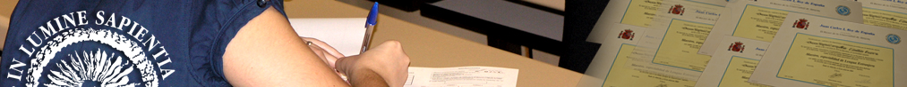
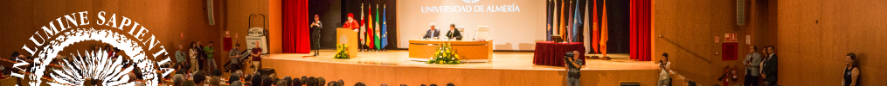
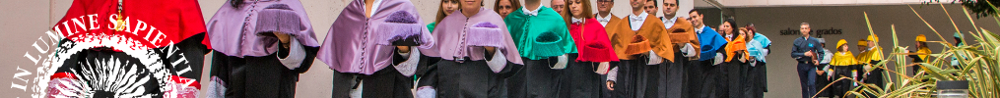

<!--
  Generated template for the EstudiosPage page.

  See http://ionicframework.com/docs/components/#navigation for more info on
  Ionic pages and navigation.
-->
<ion-header>

  <ion-navbar>
    <ion-title>Estudios</ion-title>
  </ion-navbar>

</ion-header>


<ion-content class="card-background-page">
  <ion-card (click)="openGrades()" >
    
    <div class="card-title">Grados</div>
  </ion-card>
  <ion-card (click)="openMasters()">
    
    <div class="card-title">Másters</div>
  </ion-card>
  <ion-card (click)="openPhD()">
    
    <div class="card-title">Doctorado</div>

  </ion-card>

  <ion-card>
    <ion-card-header>
      Información complementaria
    </ion-card-header>
    <ion-card-content>
      Consulta la <a href = "https://www.ual.es/estudios">web de estudios en la UAL</a>
    </ion-card-content>
  </ion-card>
</ion-content>
